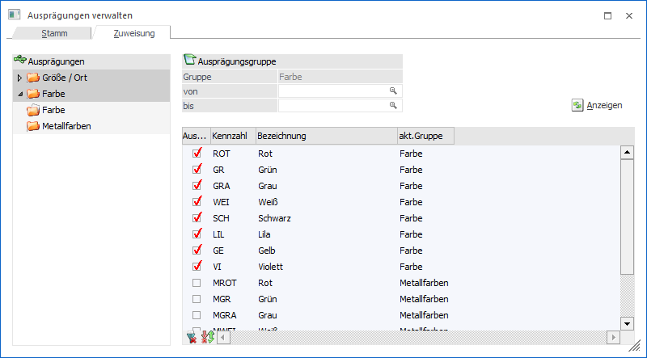
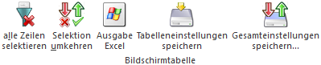

In dem Register "Zuweisung können Ausprägungen einer anderen Ausprägungsgruppe zugewiesen werden. Dies ist hauptsächlich dann notwendig, wenn Ausprägungen bereits vorhanden sind und neuen Ausprägungsgruppen zugeordnet werden sollen.

Die Ausprägungsgruppen werden im linken Bereich des Fensters in Form einer Tabellenstruktur angezeigt. Wenn eine Ausprägungsgruppe angewählt wird, dann werden rechts in der Ausprägungstabelle alle Ausprägungen aus Ausprägung 1 oder Ausprägung 2 angezeigt (gemäß der gewählten Ausprägungsgruppe).
Bei den Ausprägungen, die dieser Ausprägungsgruppe bereits zugewiesen sind, wird die Option "Auswahl" in der Tabelle aktiviert. Wenn andere Ausprägungen dieser Gruppe zugewiesen werden sollen, so muss die Option entsprechend aktiviert werden.
Achtung
Da Ausprägungen immer einer Gruppe zugewiesen sein müssen, kann durch das Deaktivieren der Auswahl keine Änderung der Gruppenzuweisung durchgeführt werden, sondern nur durch das Aktivieren in einer anderen Gruppe.
Hinweis
Artikel können immer nur eine Ausprägungsgruppe verwenden. Ausprägungen können daher nicht einer anderen Gruppe zugeordnet werden, wenn…
ü dadurch Ausprägungsartikel entstehen würden, die mehr als eine Gruppe zugewiesen sind
ü dadurch Hauptartikel entstehen, deren von/bis - Einschränkung sich über mehrere Gruppen erstrecken würde.
Beispiel
Es gibt die Ausprägungen 36, 38, 40, XL, XS. Für den Hauptartikel 4711 sind Ausprägungsartikel in allen 5 Größen angelegt ("4711,36", "4711,38", "4711,40", "4711,XL" und "4711,XS").
Die Ausprägungen können jetzt nicht 2 verschiedenen Ausprägungsgruppen (z.B. "Größe1: 36, 38, 40" und "Größe2: XL, XS") zugewiesen werden, da dann der Artikel 4711 2 Ausprägungsgruppen der gleichen Ausprägungshauptebene verwenden würde, was nicht erlaubt ist.
Ø Ausprägung von / bis
An dieser Stelle kann zur Selektion in der Tabelle ein Ausprägungsbereich definiert werden.
Ø  Anzeigen
Anzeigen
Nach dem Drücken des Buttons "Anzeige" werden alle Ausprägungen, welche der Selektion entsprechen, in der Ausprägungstabelle angezeigt.
Tabellenbuttons

Ø alle Zeilen selektieren
Durch Anwahl des Buttons "alle Zeilen selektieren" werden alle Zeilen selektiert.
Ø Selektion umkehren
Mit Hilfe dieses Buttons werden alle selektierten Zeilen deselektiert und alle nicht selektierten Zeilen selektiert.
Ø Ausgabe Excel
Durch Anwahl des Buttons "Ausgabe Excel" wird der Inhalt der Tabelle an Microsoft Excel übergeben.
Ø Tabelleneinstellungen speichern
Die Spalten einer Tabelle können grundsätzlich an beliebige Positionen verschoben, bzw. in der Breite entsprechend angepasst werden. Durch Anwahl des Buttons "Tabelleneinstellungen speichern" werden die Einstellungen benutzerspezifisch gespeichert und bei dem nächsten Aufruf des Programmpunktes wieder vorgeschlagen.
Ø Gesamteinstellungen speichern
Im Gegensatz zu "Tabelleneinstellungen speichern" können mit "Gesamteinstellungen speichern" mehrere Tabellenaufbauten gespeichert und nach Wunsch geladen werden. Zusätzlich werden Sonderfunktionen der Tabelle (z.B. "Spalte gruppieren") ebenfalls bei der Speicherung bedacht.